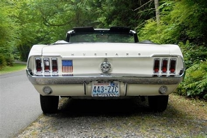
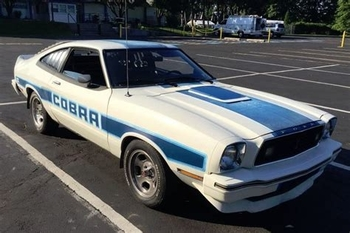

Generation 2
|  |  |
The second generation began in 1974 and ended in 1978. This generation introudced the "Pintostang" which was smaller and more fuel-efficent. The 1978 model year changed from the fuel-efficient Mustang gerneation 2 with the flashy Cobra II and King Cobra Mustang.
Enginer variants for this generation included the 2.3-liter, four-cylinder enginer for the Pinto and 2.8-liter V6 for the Mercury Capri. The 1978 models, flashy Cobra II and Cobra Mustang, was favored by the hot rod community as they had tubular a-arms, rack-and-pinion steering, coil springs, and a compact independent front suspension.
Lacocca, the new Ford Motor Company president, oredered for more efficent Mustangs
Smaller and heavier than original Mustang
Performance reduced and became a less muscular steed